🏠
Nybygg
Oppføring av eneboliger og nye bygg med gjennomtenkte løsninger, god planlegging og solid håndverk.
Fra første idé til ferdig prosjekt. Vi hjelper med nybygg, tilbygg, rehabilitering, takarbeid og tømreroppdrag – med fokus på kvalitet, god kommunikasjon og ryddig gjennomføring.
Vi tar på oss oppdrag for privatkunder, bedrifter og entreprenører – fra mindre arbeider til større byggeprosjekter.
Oppføring av eneboliger og nye bygg med gjennomtenkte løsninger, god planlegging og solid håndverk.
Utvidelse og videreutvikling av eksisterende boliger – tilpasset byggets uttrykk og familiens behov.
Oppgradering, ombygging og totalrenovering av boliger og bygg, både innvendig og utvendig.
Takomlegging, undertak, lekter, beslagarbeid, kledning og oppgradering av fasader.
Riving av eksisterende gulv, klargjøring av underlag og legging av nye gulv- og parkettløsninger.
Utskifting, montering og tilpasning av vinduer og dører med nødvendige foringer og listverk.
Byggearbeid og tilpasninger knyttet til vinterhager og andre utvidelser av boligens bruksareal.
Arbeid med takrenner, nedløpsrør og tilhørende beslag for kontrollert bortledning av regnvann.
Overflatearbeid som del av rehabilitering og oppussing – fra klargjøring til ferdig malte vegger og tak.
Planlegging og koordinering av ulike arbeider og fag, med fokus på oversikt, fremdrift og kommunikasjon.
Tømrerarbeid som underentreprenør og ekstra kapasitet ved behov i prosjektet.
Stillasutleie og montering til byggeprosjekter på Østlandet – se egen presentasjon av BK Stillas.
Les mer om BK Stillas →Vi tar på oss både mindre tømreroppgaver og større oppgraderinger. Ta kontakt for en prat om hva du ønsker å få gjort – så ser vi på mulighetene sammen.
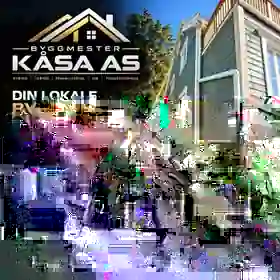
Har du et prosjekt som ikke står på listen? Vi vurderer gjerne oppdraget sammen med deg og finner ut hvilke løsninger som kan passe.
Beskriv prosjektet dittByggmester Kåsa AS bygger på en håndverksvirksomhet med historie tilbake til 2010. Det som startet som et enkeltpersonforetak, ble videreført som aksjeselskap i januar 2025. Overgangen til AS markerte et nytt kapittel for virksomheten, samtidig som erfaringen, håndverkskunnskapen og ambisjonen om å levere godt arbeid ble tatt med videre.
Gjennom årene har vi opparbeidet erfaring fra et bredt spekter av byggeoppdrag. Vi leverer tjenester innen nybygg, tilbygg og påbygg, rehabilitering, totalrenovering, takarbeid og tradisjonelt tømrerarbeid. Oppdragene varierer fra mindre arbeider og tilpasninger i eksisterende boliger til større og mer sammensatte byggeprosjekter.
Vi har erfaring fra arbeid på både boliger og næringsbygg, og har også vært involvert i TV-produksjonen Farmen på TV 2, på gården i Ørje. Slike oppdrag har gitt verdifull erfaring med ulike rammer, praktiske utfordringer og behovet for å finne gode løsninger når arbeidet skal planlegges og gjennomføres.
Byggmester Kåsa AS tar oppdrag på hele Østlandet. Vi ønsker å være en samarbeidspartner som er tilgjengelig, løsningsorientert og tydelig gjennom hele prosessen. God planlegging, ryddig kommunikasjon og respekt for kundens eiendom og tid er viktige deler av måten vi jobber på.
For oss handler godt håndverk om mer enn selve utførelsen. Det handler også om å forstå behovet, gjøre gode vurderinger underveis og levere et resultat kunden kan være trygg på. Enten oppdraget gjelder nybygg, en utvidelse av boligen, rehabilitering, takarbeid eller tømrerarbeid som underentreprenør, møter vi arbeidet med samme mål: solide løsninger som varer.
Har du et byggeprosjekt på gang? Ta gjerne kontakt for en hyggelig prat og et uforpliktende tilbud. Vi ser frem til å høre om planene dine og finne ut hvordan vi kan bidra.
Ta kontakt med ossEt utvalg fra arbeidshverdagen til Byggmester Kåsa og BK Stillas. Vi viser både større byggeoppgaver, rehabilitering og detaljer fra utførte arbeider.
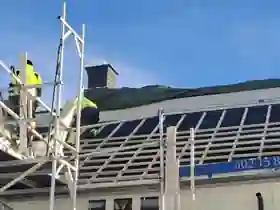
Arbeid med takkonstruksjon, undertak, sløyfer og lekting som del av en større takjobb. Bildene viser flere faser av oppbyggingen og arbeidet på taket.
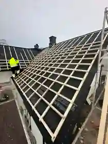
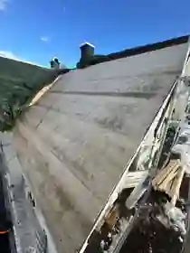
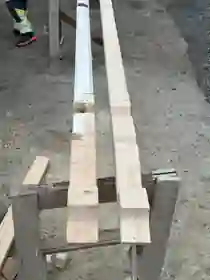
Produksjon og tilpasning av tredeler til en særskilt bærende løsning. Oppdraget viser praktisk problemløsning, nøyaktig tilpasning og håndverk i detaljene.
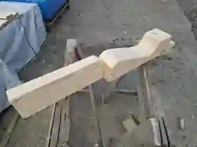
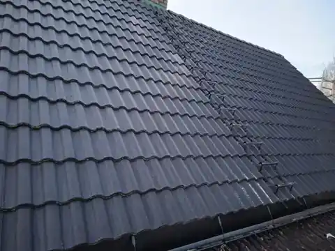
Arbeid med oppbygging av taket, lekting og montering av takstein. Referansen viser deler av prosessen fra klargjøring av takflaten til takstein er lagt.
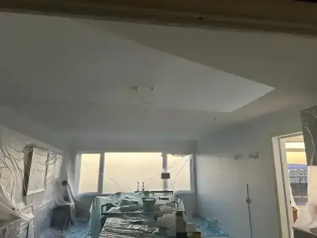
Et helhetlig rehabiliteringsoppdrag der skadede vegger og parkett ble revet og bygget opp på nytt. Vi dekket til og beskyttet øvrige overflater, bygget nye vegger, la parkett, sparklet og malte. Arbeidet omfattet både riving, oppbygging og ferdigstilling.
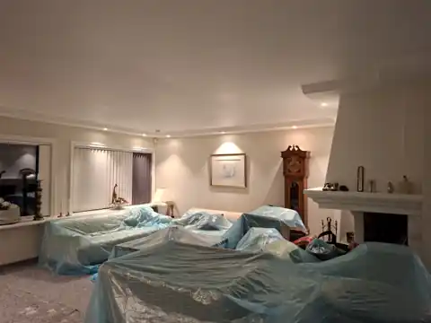
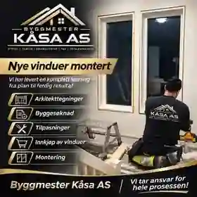
Arbeid med utskifting av vinduer i eksisterende bolig. Vi bistår med demontering, montering og nødvendige tilpasninger rundt vinduene.
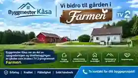
Byggmester Kåsa har vært involvert i arbeid på gården som ble brukt i TV-produksjonen Farmen. Et annerledes oppdrag med praktiske løsninger og arbeid i et produksjonsmiljø.
Ønsker du å se flere referanser? Vi bygger fortløpende ut prosjektoversikten med bilder fra flere byggeplasser og oppdrag.
Spør oss om referanserHMS · Presisjon · Trygghet
Vi bygger grunnlaget for seriøse prosjekter. BK Stillas leverer stillasutleie og montering for håndverkere, entreprenører, bedrifter og private kunder. Vi hjelper deg med å finne en praktisk og trygg stillasløsning tilpasset bygget, arbeidsoppgaven og prosjektets fremdrift.
Vi leverer på hele Østlandet og bistår ved både små og større oppdrag – fra stillas til vindusutskifting og maling, til større fasade- og takarbeider. Vi har HAKI aluminiumsstillas og lettstillas, og vurderer løsningen ut fra høyde, lengde, adkomst og hva som skal utføres.
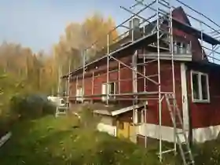
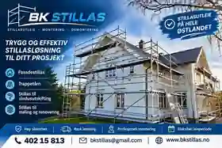
Arbeidsstillas langs fasader ved maling, vedlikehold, rehabilitering, etterisolering og utskifting av kledning og vinduer.
Aluminiumssystemer og lette stillasløsninger som gir fleksibilitet ved montering, flytting og tilpasning til byggeplassen.
Praktiske adkomstløsninger som gjør det enklere å komme trygt opp og ned mellom bakkenivå og arbeidsområdene.
Stillasløsninger ved takomlegging, reparasjoner, beslagarbeid og annet arbeid der håndverkerne trenger god adkomst langs bygget.
Tilrettelegging for oppussing og ombygging, enten arbeidet gjelder én fasade, flere sider eller større deler av bygget.
Vi tilbyr stillasutleie og montering, med avklaring av omfang og leieperiode ut fra prosjektets behov.
Stillas er en viktig del av en effektiv og sikker byggeplass. BK Stillas bistår blant annet med løsninger til:
God stillasplanlegging starter med å forstå jobben som skal gjøres. Vi legger vekt på riktig løsning, ryddig montering og at adkomst og sikring er tilpasset arbeidets art.
HMS, presisjon og trygghet skal være en naturlig del av leveransen. Vi avklarer blant annet byggets mål og høyde, hvor stillaset skal stå, adkomstforhold, ønsket leieperiode og hvilke arbeidsoppgaver stillaset skal brukes til.
Vårt mål er å gjøre det enklere for kunden å komme i gang med arbeidet – med en stillasløsning som er praktisk, oversiktlig og tilpasset prosjektet.
Et stillas består av flere deler som sammen gir en stabil arbeidsplattform og trygg adkomst. Avhengig av oppdraget kan løsningen blant annet bygges opp med:
Behovet er forskjellig fra prosjekt til prosjekt. Ved vindusutskifting er god tilgang langs fasaden viktig. Ved maling og fasadearbeid må arbeidsnivåene passe til høyden og lengden på veggen. Ved takarbeid må adkomst og plassering vurderes ut fra byggets utforming og arbeidet som skal utføres.
Vi tar en gjennomgang av oppdraget før vi anbefaler en løsning. Målet er at stillaset skal fungere godt for dem som faktisk skal bruke det.
Vi tar oppdrag på hele Østlandet. Ta kontakt med prosjektadresse og ønsket tidspunkt, så avklarer vi kapasitet og gjennomføring.
Ja, vi vurderer både mindre oppdrag som vindusutskifting og maling, og større stillasbehov ved rehabilitering, takarbeid og byggeprosjekter.
Send adresse, bilder av bygget, omtrentlige mål, type arbeid og ønsket leieperiode. Jo mer informasjon vi får, desto bedre kan vi vurdere behovet.
BK Stillas tilbyr stillasutleie og montering. Omfang og løsning avtales ut fra prosjektets størrelse og behov.
Send oss gjerne adresse, noen bilder av bygget, hva slags arbeid som skal utføres og når du trenger stillaset. Da får vi et godt utgangspunkt for å vurdere oppdraget og gi deg en tilbakemelding.
Her er svar på noen av spørsmålene vi ofte får fra kunder og samarbeidspartnere.
Vi utfører blant annet nybygg, tilbygg og påbygg, rehabilitering, tak og fasade, vindusutskifting, parkett og gulv, vinterhager, takrenner og nedløp, sparkling og maling. Vi vurderer både mindre oppdrag og større prosjekter.
Byggmester Kåsa AS og BK Stillas tar oppdrag på hele Østlandet. Oppdrag og kapasitet vurderes ut fra sted, omfang og ønsket fremdrift.
Ja. Vi tar tømreroppdrag som underentreprenør og kan bidra med ekstra kapasitet og praktisk gjennomføring etter nærmere avtale.
Send gjerne prosjektadresse, noen bilder, en kort beskrivelse av arbeidet, omtrentlige mål og ønsket tidspunkt. Tegninger eller annen prosjektinformasjon er også nyttig der det finnes.
Usikker på hva du trenger? Beskriv situasjonen, så tar vi en uforpliktende prat om mulige løsninger og neste steg.
Ta kontaktFortell oss kort hva du planlegger, så tar vi en prat om hvordan vi kan hjelpe. Vi tar oppdrag på hele Østlandet.
Ring ossByggmester Kåsa AS
Telefon: 402 15 813
E-post: bkstillas@gmail.com
Arbeidsområde: Hele Østlandet
BK Stillas
Stillasutleie og montering
Følg oss på sosiale medier